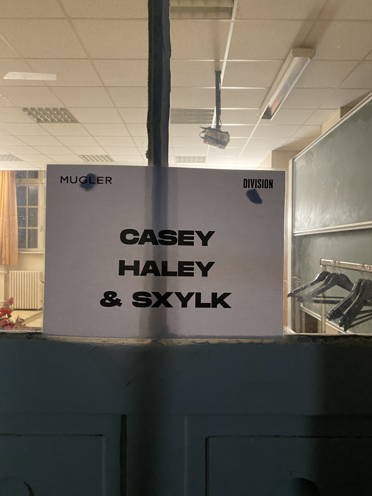

Mugler
Music Director, Paris. Runway, campaign and post-production sound.F/W 2024

The workRunway soundtrack · Campaign soundtrack · Exclusive remixes · Post-production sound
The sound of Mugler F/W 2024, from runway to campaign.
I curated the runway show soundtrack, the global campaign soundtrack and post-production sound design, working cross-functionally with the creative director and production team to set one sonic direction across runway, digital and global campaign channels.
The work included the now viral exclusive show mix of JT’s “Sideways,” with every reel reaching 1M+ social impressions within 24 hours.